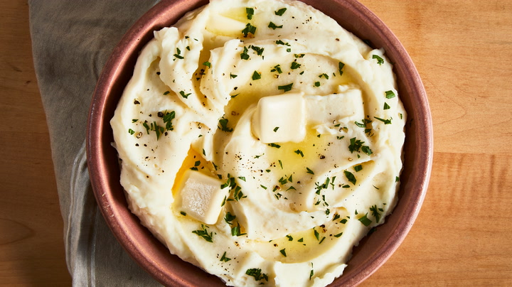

Mashed Potatoes

Description>
Mashed potatoes are a creamy, comforting dish made by mashing boiled potatoes with milk, butter, and seasoning. Their smooth texture and rich flavor make them a versatile side dish that pairs well with a variety of meals, from roasted meats to vegetables.
Simple yet satisfying, mashed potatoes can be customized with garlic, cheese, or herbs to enhance their flavor. Whether served rustic and chunky or whipped to perfection, they bring warmth and comfort to any table.
Ingredients
- 3 large russet potatoes, peeled and cut in half lengthwise
- 1/2 cup whole milk
- 1/4 cup butter
- salt and grond pepper to taste
Steps
-
Place potatoes in a large pot and cover with salted water. Bring to a boil. Reduce heat to medium-low, cover, and simmer until tender, 20 to 25 minutes.
-
Drain potatoes, then return to the pot. Turn heat to high and allow potatoes to dry for about 30 seconds. Turn off heat.
-
Mash potatoes with a potato masher twice around the pot, then add milk and butter. Continue to mash until smooth and fluffy. Whisk in salt and black pepper until evenly distributed, about 15 seconds.